Coastal Barn Quilts is Susan & Christina, a mother-daughter duo spreading the love of hand-painted barn quilts — one unique piece at a time. From custom commissions to public installations and paint-along classes, every quilt starts with tape, paint, and a whole lot of heart.
See Our Work Join a ClassIt's probably about time we introduce ourselves! We're Susan & Christina, a mother-daughter duo embarking on a barn quilt painting adventure along the Eastern coast of North Carolina. Our goal is to spread the joy of barn quilts on the Outer Banks and surrounding areas — one barn, one home, one fence, one shed, and one mailbox at a time.
You can count the barn quilts in our area on one hand, and it's our hope to change that. Someday, we'd love to see enough interest grow to create an official barn quilt trail for locals and tourists to enjoy for years to come.
Follow Along on Facebook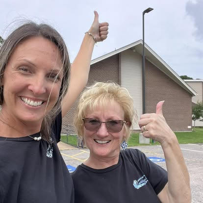
Susan's love of sewing began almost 40 years ago, making bedazzled competition outfits while Christina took figure skating lessons — a passion that quickly grew into piecing quilt blocks together with the Quilters group at her church, bound for local fire departments and shelters. Years later, spotting huge, beautiful quilt blocks on barns while driving through the Michigan countryside sparked a new dream: painting her own. Three years ago, self-taught, Susan painted her very first 2'x2' barn quilt, and her husband Robert hung it outside on their shed for everyone to enjoy.
A homeschool mom and military wife, Christina has always loved all things crafty, dabbling in painting, sewing, and quilting projects over the years — including designing original, one-of-a-kind Halloween costumes for her daughters every fall. When her mom invited her to a Barn Quilt Artist Retreat in Ashe County, NC one summer, she had no idea it would grow into a small family business. She jumped right into drawing, taping, and painting alongside her mom, and with a deep love for the beach, she draws much of her color inspiration straight from nature along the ocean's coast.
As a family team, we often source out some manual labor to Susan's husband, Robert — even though he prefers to stay out of the limelight. He might try to deny it, but he's the muscle behind our work: snapping boards, sanding, priming, sealing, and assembly, he's always ready to help his girls out.
Often working together on projects in both Currituck and Dare counties, we keep each other pretty busy no matter which of our houses we happen to be at that day. Thanks for joining us on our journey — we'd love for you to share our page and invite others who might enjoy our beautiful creations, and quirky adventures, too!
From nature-inspired diamonds to patriotic stars, every barn quilt is designed and hand-painted to order.
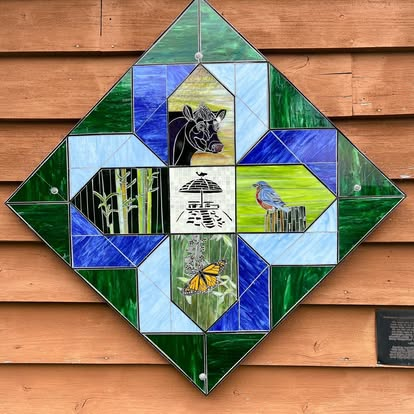
A diamond block featuring a cow, marsh reeds, a bluebird, and a monarch butterfly.
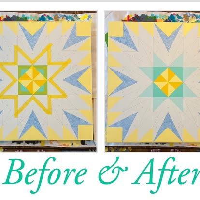
A star block getting a full repaint — same pattern, brand new color story.
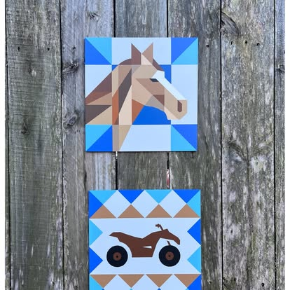
A horse portrait and an ATV block, painted as a matching pair for a farmhouse fence.
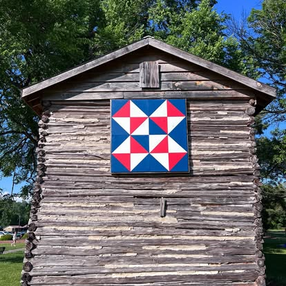
A red, white, and blue star block mounted on a historic log cabin.
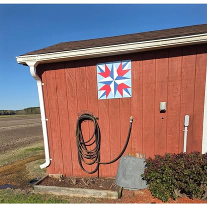
A classic star pattern painted for a red barn.
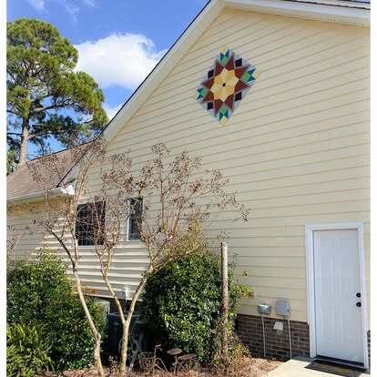
A diamond-in-a-square block installed on a coastal home.
Grab a seat at the table — we host hands-on classes where you tape, paint, and take home your very own hand-painted barn quilt square. No experience necessary.
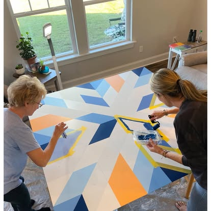
Taping and painting a large-scale geometric design from start to finish.
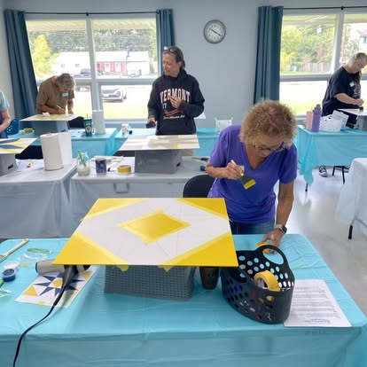
Painters working side-by-side on their own barn quilt squares.
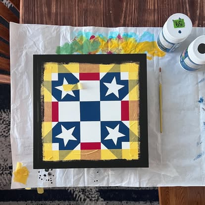
Careful taping is the secret to crisp, clean lines on every block.
We're regularly out at local markets and craft fairs, and hosting hands-on barn quilt painting classes. Follow our Facebook page for the most current schedule.
Small-group classes where you tape, paint, and take home your own hand-painted barn quilt square — no experience necessary.
Find our booth at local markets and fall festivals throughout the season — stop by to see our work in person.
We open up custom commission slots throughout the year for barn, shed, and porch installations.
Some of our barn quilts live on private barns and sheds — others are proudly installed at public buildings and businesses. Here's a peek at a few.
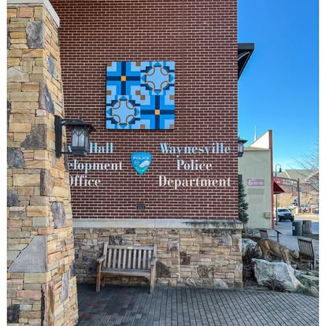
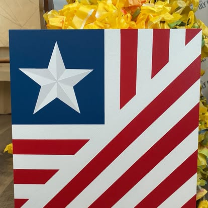
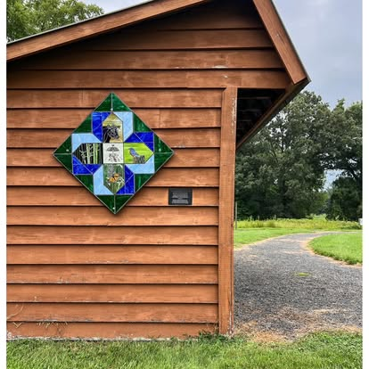
Sign up for updates on new designs, upcoming classes, and where to find us next.